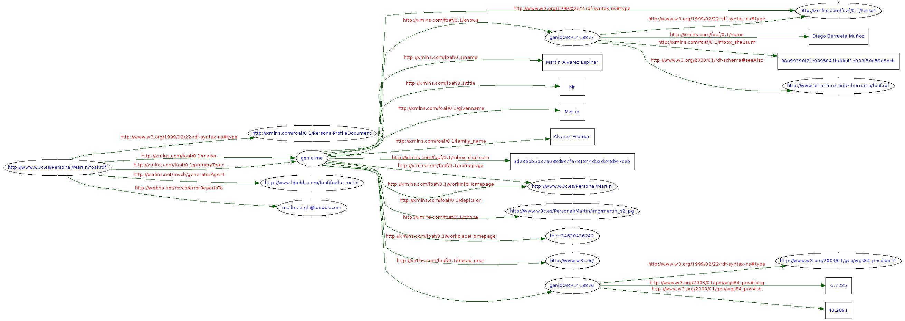

Source | Triples | Messages | Graph | Feedback | Back to Validator Input
Your RDF document validated successfully.
1: <?xml version="1.0" encoding="UTF-8"?> 2: <rdf:RDF 3: xmlns:rdf="http://www.w3.org/1999/02/22-rdf-syntax-ns#" 4: xmlns:rdfs="http://www.w3.org/2000/01/rdf-schema#" 5: xmlns:foaf="http://xmlns.com/foaf/0.1/" 6: xmlns:admin="http://webns.net/mvcb/" 7: xmlns:geo="http://www.w3.org/2003/01/geo/wgs84_pos#"> 8: 9: <foaf:PersonalProfileDocument rdf:about=""> 10: <foaf:maker rdf:nodeID="me"/> 11: <foaf:primaryTopic rdf:nodeID="me"/> 12: <admin:generatorAgent rdf:resource="http://www.ldodds.com/foaf/foaf-a-matic"/> 13: <admin:errorReportsTo rdf:resource="mailto:leigh@ldodds.com"/> 14: </foaf:PersonalProfileDocument> 15: 16: <foaf:Person rdf:nodeID="me"> 17: <foaf:name>Martin Alvarez Espinar</foaf:name> 18: <foaf:title>Mr</foaf:title> 19: <foaf:givenname>Martin</foaf:givenname> 20: <foaf:family_name>Alvarez Espinar</foaf:family_name> 21: <foaf:mbox_sha1sum>3d23bbb5b37a688d9c7fa781844d52d248b47ceb</foaf:mbox_sha1sum> 22: <foaf:homepage rdf:resource="http://www.w3c.es/Personal/Martin"/> 23: <foaf:depiction rdf:resource="http://www.w3c.es/Personal/Martin/img/martin_s2.jpg"/> 24: <foaf:phone rdf:resource="tel:+34620436242"/> 25: <foaf:workplaceHomepage rdf:resource="http://www.w3c.es/"/> 26: <foaf:workInfoHomepage rdf:resource="http://www.w3c.es/Personal/Martin"/> 27: <!-- Situación geográfica --> 28: <foaf:based_near> 29: <geo:point geo:long="-5.7235" geo:lat="43.2891"/> 30: </foaf:based_near> 31: 32: <foaf:knows> 33: <foaf:Person> 34: <foaf:name>Diego Berrueta Muñoz</foaf:name> 35: <foaf:mbox_sha1sum>98a99390f2fe9395041bddc41e933f50e59a5ecb</foaf:mbox_sha1sum> 36: <rdfs:seeAlso rdf:resource="http://www.asturlinux.org/~berrueta/foaf.rdf"/> 37: </foaf:Person> 38: </foaf:knows> 39: 40: 41: </foaf:Person> 42: </rdf:RDF> 43:

If you suspect the parser is in error, please enter an explanation below and then press the Submit problem report button, to mail the report (and listing) to www-rdf-validator@w3.org
Source | Triples | Messages | Graph | Feedback | Back to Validator Input
{kind=link}